OUM |
Technique Overview |
||
Method Navigation |
Current Page Navigation |
||
|
|
||||||||
The purpose of this technique is to provide guidance on how to perform operational troubleshooting when using a service-oriented architecture (SOA). Troubleshooting in traditional IT environments already places a burden on the day-to-day operations of IT systems. The approach taken through SOA, where applications are developed and composed of shared services, can make the IT environment and the number of manageable assets deployed within, expand at an even faster pace. Therefore, a certain amount of discipline is required with respect to ensuring the maximum level of uptime in the environment while, minimizing the impact of outages and the time taken to rectify problems in the IT environment. If steps are not taken up front with respect to planning for an expanding SOA environment it may quickly become unmanageable to the point of undermining the entire IT strategy.
Instrumentation should be utilized to provide information geared towards optimizing the troubleshooting process. Through traceability, and patterns encountered in experienced symptoms, the IT troubleshooting process can be greatly enhanced, further, some proactive measures can be used to ensure that trouble is prevented when threshold levels with respect to SLAs and Resource Utilization are crossed before actual symptoms are experienced.
Requirements: Operational Troubleshooting
The following represent the potential high-level requirements for troubleshooting within a SOA:
Operational Troubleshooting Strategy and Process – The Operational Troubleshooting Strategy and Process describes the strategy that should be used for operational troubleshooting, including a description of the troubleshooting process and possible preventive measures that can be taken to make the troubleshooting process as effective and proactive as possible. It also includes a definition of all required instrumentation entities and data that is required to make this process as effective as possible.
No. |
Step | Component | Component Description |
|---|---|---|---|
1 |
Determine operation troubleshooting strategy. | Operation Troubleshooting Strategy | The Operational Troubleshooting Strategy describes the strategy that should be used for operational troubleshooting, including a description of the troubleshooting process and possible preventive measures that can be taken. |
2 |
Determine instrumentation entities and data for troubleshooting. | Instrumentation Entities and Data for Troubleshooting | The Instrumentation Entities and Data for Troubleshooting includes a description of the required entities and data that are required for instrumenting the troubleshooting process. |
3 |
Determine instrumentation data for proactive management. | Instrumentation Data for Proactive Management. | The Instrumentation Data for Proactive Management includes a description of the required instrumentation data to allow for proactive management to prevent potential problems to occur. |
The basic troubleshooting strategy is to learn from past experience. In many organizations, this strategy is applied, but it relies on the memory of the operations personnel, which also leaves when the individual does, which can be quite disruptive. Further, due to the large number of dependencies resulting from expanding SOA deployments, the number of symptoms possibly encountered in an SOA environment may be significant, which could tax the memory of any savvy operations personnel.
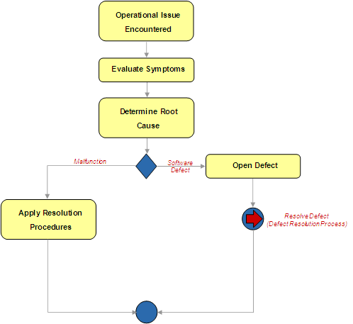
The Basic Troubleshooting Process
Traditionally, the troubleshooting process has operated as depicted in the illustration above. This model is mostly a, as encountered model, where each new incident is handled with very little foreknowledge of previous incidents, unless the operations personnel are still familiar with previous occurrences. But, even then, the root cause may be remembered, but the resolution procedures may not necessarily be fresh. A better approach would be to instrument the troubleshooting process and use the data from previous incidents to more quickly track down and resolve new incidents, in addition to detecting patterns of reoccurring incidents that may be detectable and or auto-correctable through engineering or the application of technology.
A good approach to take with respect to troubleshooting in an SOA environment is to establish a taxonomy of symptoms which are associated with their source. (For example, hardware, Component, Server Application, etc.) This way when an incident takes place, if similar symptoms have been encountered in the past, they may be traced through to the appropriate root cause and resolution procedures, greatly speeding the response experienced by IT operations in resolving an issue. The suggested high-level process is depicted below:
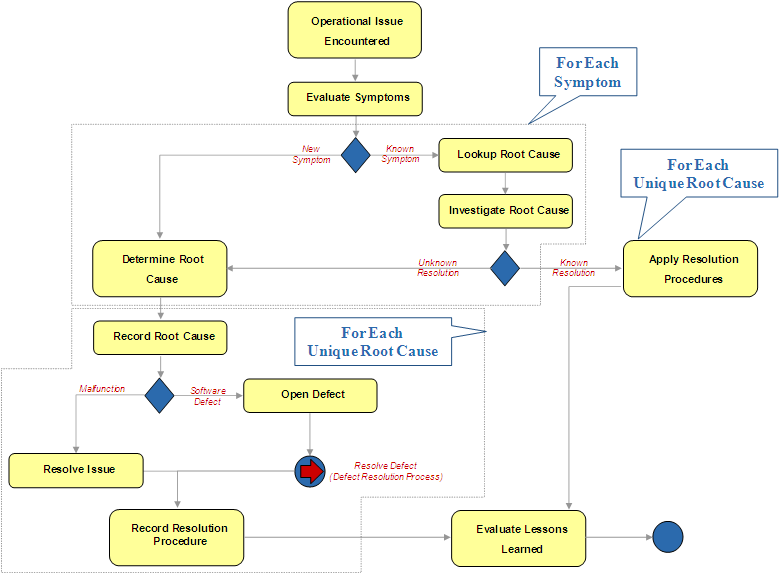
Symptom Based Trouble Analysis
Operational Issue Encountered: The process begins when an unexpected incident is encountered in the operational environment.
Evaluate Symptoms: Here the symptoms are collected and for each symptom an evaluation procedure takes place. The first step is to determine if the symptom, applying to the specific source has been encountered before. If so, then the root cause can be established, otherwise, the standard procedures to determine the new root cause will be necessary.
Lookup Root Cause: Since the symptom was encountered in a previous incident, the information associated with solving the issue would also have been recorded (through this process). This includes the recording of the root cause for the issue.
Investigate Root Cause: If the root cause fits with the rest of the symptoms encountered, then the previously recorded resolution procedures can be applied. Otherwise, examining other symptoms or moving on to the standard root cause determination activities will be necessary.
Determine Root Cause: This step is only encountered when the symptoms do not match the perceived root cause, or there is no record of encountering the incident with respect to its symptoms in the past. In this scenario, standard troubleshooting analysis will be required to determine the source of the incident. Any new symptom encountered, should be recorded against the source (e.g., Component, Hardware, Server Application, etc.).
Record Root Cause: Once the root cause has been determined, it should be recorded and linked back to the symptoms that it is associated with.
Open Defect: If the root cause is the result of a defect which must be addressed by either engineering, or a Vendor, then a defect should be created for the issue. The defect would then be resolved through the standard defect resolution process. The defect would be recorded and linked through the incident (Trouble Ticket) as the root cause. That way regressions can be quickly determined if the incident were to take place again.
Resolve Issue: If the incident was caused by a malfunction, such as a hardware failure, or any other event that can be rectified by operations personnel (no engineering involvement necessary), then the issue should be resolved directly by the technician investigating the incident.
Record Resolution Procedure: Once the issue has been resolved, the resolution procedure should be documented and linked back through the root cause. That way, if the same root cause is encountered again, the resolution instructions are readily available.
Evaluate Lessons Learned: Finally, after the issue has been resolved and evaluation should take place to determine if the incident is a reoccurring pattern, or if any other steps may be taken to either proactively handle the issue without involving operations, or if the resolution procedures can be streamlined (e.g., using scripts, etc.).
By drawing on the instrumentation established for the purpose of monitoring and managing performance and conformance (see the Service Engineering Process Monitoring technique, as well as established for capacity planning (see the SOA Capacity Planning technique, there are some basic preventative maintenance steps that can be taken to prevent incidents caused by SLA failures or resource utilization passing specific boundaries.
The model is to simply extend the instrumentation data collected to define a warning barrier. If a particular SLA is being monitored against a service, and the service has sustained a response time greater than the warning barrier, while still under the actual expected SLA value then an alert should be sent to notify operations that an SLA is being dangerously close to being exceeded. The condition is illustrated in the figure below:
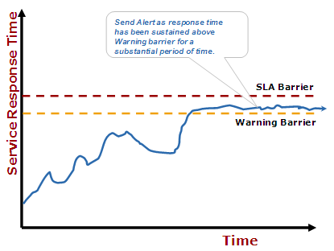
Preventative Monitoring: Service Response Times
The result may bring the attention to the issue before it really becomes an issue, and preventative action can be taken to either increase capacity in the next maintenance cycle, or any other action necessary to prevent an SLA breech.
The same technique could apply to resource utilization (which would correlate to response times). The illustration below depicts this example:
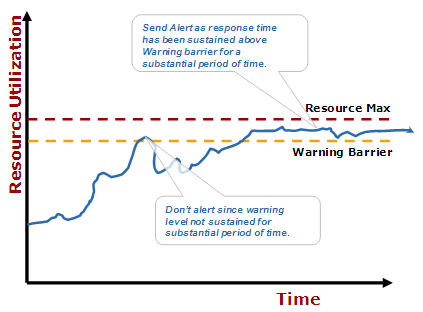
Preventative Monitoring: Resource Utilization
Here resource utilization is monitored, and again, when it is sustained above the Warning Barrier an alert is sent to notify operations of the dangerously high sustained resource utilization observed on the device.
Remember: The resource utilization max is not necessarily the physical maximum value for the hardware, but is the maximum value that can be safely sustained without causing an SLA violation.
Although not directly related to instrumentation, the consideration of troubleshooting during the development of engineering principals is a highly welcome concept. A great deal of benefit can be achieved by establishing a common exception handling and logging framework which is applied consistently across the SOA assets.
Note: The use of intermediaries, such as a service bus also provides great opportunities to standardize on service enabled assets. Remember, just because a vendor ships an application does not mean that is conforms to the enterprise’s reference architecture or engineering principals. Intermediaries are a great tool for bringing a previously published service enabled asset into conformance with the enterprise’s standards, which may add a great deal of flexibility with respect to its use. This may include standardizing the exception handling and logging capabilities for the service enabled asset.
Instrumentation plays a significant role in the troubleshooting process. By instrumenting the results of previous incidents, the information can be brought forward to optimize future iterations of the troubleshooting process.
From the requirements and strategy covered above, the following conceptual instrumentation entities materialize:
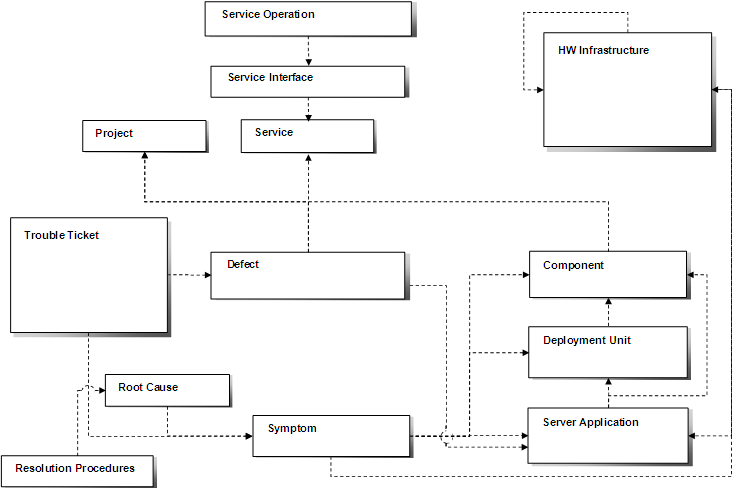
Conceptual Entities: Troubleshooting
The relationships can be summarized as follows:
In support of incident analysis and the strategy mentioned earlier, the following conceptual instrumentation data is realized through the operational troubleshooting procedures:
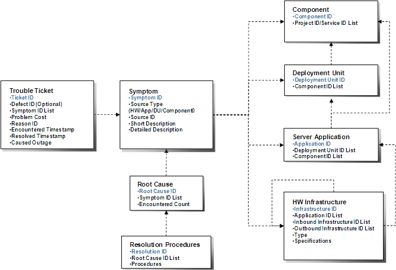
Conceptual Data: Incident Analysis
For the most part, the entities involved in the incident analysis activities have been previously established for the purpose of traceability (see the Service Engineering Process Monitoring technique and the SOA Capacity Planning technique). There are some new records that are used to support the incident analysis process however. They are defined as follows:
The Trouble Ticket provides the high-level instrumentation data correlating to an unexpected incident encountered in production. The following data elements are defined:
The following list of reason codes are defined based on the reasoning for a trouble ticket’s primary cause:
The Reason ID value set provided above represent a default set, and should be customized or extended to meet the particular demands of the adopting SOA.
The Symptom instrumentation record tracks the data necessary to track symptoms and trace them to the incidents root cause and eventual resolution procedures. The following data is recorded:
Once a root cause is established for one or more symptoms, the following instrumentation data is recorded:
Finally, once a root cause is established the following is recorded with respect to instrumenting the resolution procedures:
The following illustrates the troubleshooting process with respect to incident analysis:
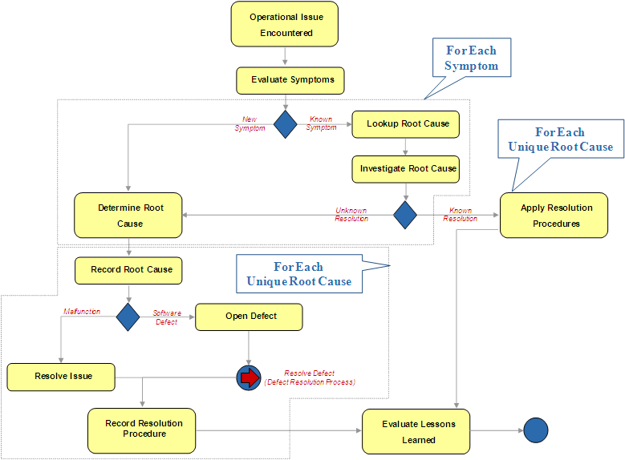
Symptom Based Trouble Analysis
For the purpose of clarity, the process has been broken into two separate illustrations with the instrumentation data captured included. When new symptoms are encountered, or the root cause discovered is not appropriate for all symptoms the following path applies:
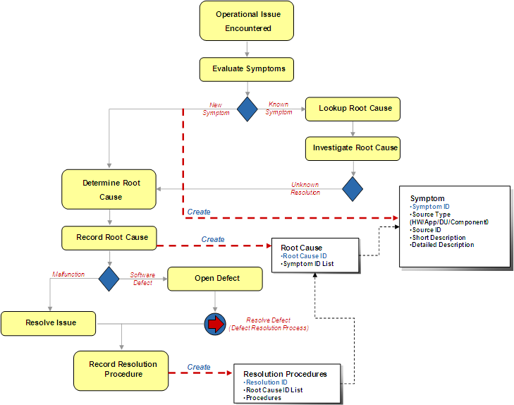
Instrumenting the Troubleshooting Process
New symptoms are instrumented when the symptom has not been previously encountered against the operational environment. When the root cause is determined, its instrumentation record is established and linked back to the symptoms. Finally, when the resolution is determined, the procedures are instrumented, and linked back to the root cause. A resolution may be linked back to multiple root causes if the same procedures are applicable.
The following represents the scenario where the symptoms, and root cause have been previously encountered and are applicable to the scenario.
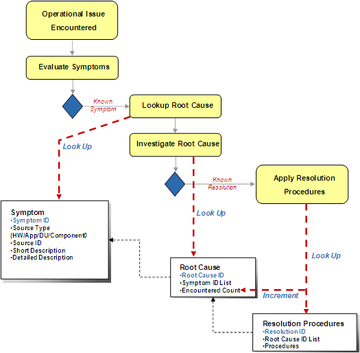
Utilizing Symptoms for Improved Resolution Time
In this scenario, one or more symptom has been instrumented in a previous incident, and the symptom and its associated root cause can be used to lookup the resolution procedures to quickly resolve the issue. A counter should be kept against the root cause to determine if the problem is encountered frequently.
CONCEPTUAL INCIDENT ANALYSIS INSTRUMENTATION DEFECT DATA
The following conceptual instrumentation data applies when a defect is associated with a trouble ticket.
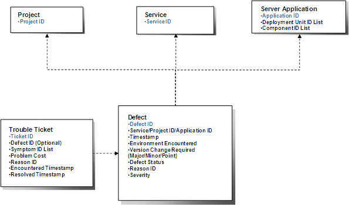
Conceptual Data: Defect Data
If a trouble ticket results in the opening of a defect against a project or service, a new defect instrumentation record should be created as follows:
The following list of reason codes are defined based on the reasoning for a service defects primary cause:
The Reason ID value set provided above represent a default set, and should be customized or extended to meet the particular demands of the adopting SOA.
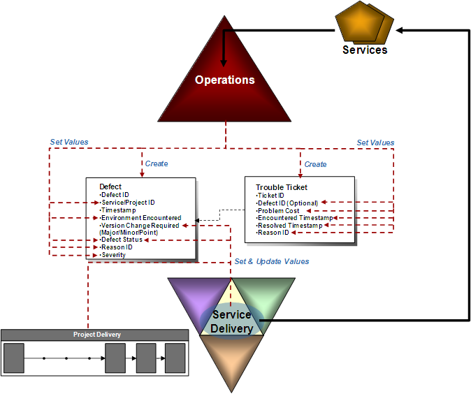
Instrumenting Defects
If a defect is determined to be the root cause of an operational issue, then it is recorded and connected back to the originating trouble ticket. The defect is then processed through the established defect resolution processes. This may involve engineering, or a particular product vendor depending on the source of the defect. This instrumentation data is important, as it ensures optimal operational processing when regressions are found against previously fixed defects.
Instrumentation may also be utilized to prevent potential problems by bringing appropriate attention to them prior to an actual incident materializing. In these scenarios, the detection of resource utilization, or response times that have become dangerously close to breeching established SLAs should trigger alerts if the level is sustained for a predetermined period of time.
In support of proactive management, the following conceptual instrumentation data is realized through the operational troubleshooting procedures:
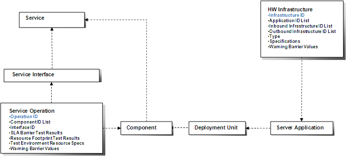
Conceptual Data: Proactive Monitoring
There are only two additional instrumentation data values that are needed to enable proactive management, as the rest were established previously in this document. The recording of the Warning Barrier Values is established to determine the length of time a resource or response time average must be sustained prior to an alert, in addition to the actual expected barrier value where response time and/or resource utilization must remain above. The warning barrier value should be established at a level beneath the actual SLA Barrier and maximum values specified for the hosting hardware.
These values should be determined during the test procedures in support of capacity planning (see the SOA Capacity Planning technique).
There are no templates available to assist with this technique.
This technique is recommended for use in the following OUM tasks:
| Task | Usage |
|---|---|
| Use this technique for guidance on how to perform operational troubleshooting when using a service-oriented architecture. |
Use the following criteria to check the quality of this technique:

Copyright © 2006, 2016, Oracle and/or its affiliates. All rights reserved.